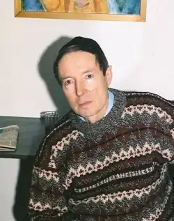
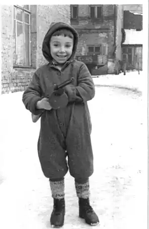
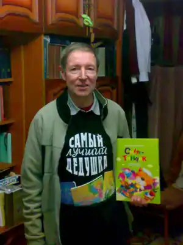
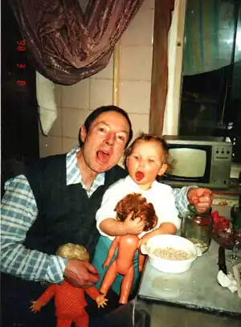

Фалькович Григорій Аврамович — український єврейський поет, народився у Києві 25 червня 1940.
У 1962-1967 роках навчався у Київському державному університет імені Т.Г.Шевченка (філфак: російська та болгарська філологія).
Працював в Інституті мовознавства ім. О.О.Потебні АН України, в Українському філіалі Всесоюзного НДІ кон’юнктури та попиту (Учений секретар) та Державному комітеті України з питань захисту прав споживачів (начальник управління, держслужбовець 5-го рангу). Голова київського єврейського культурно-просвітницького товариства імені Шолом-Алейхема. Член Українського центру Міжнародного ПЕН-Клубу. Член Національної спілки письменників України. Перші твори писав, друкував у періодиці та видавав російською мовою. Певний час предметом наукових зацікавлень і публікацій були питання теорії та практики поетичного перекладу. Перекладав з болгарської, їдиш та мов народів тодішнього Радянського Союзу (за підрядником). Розпад Радянського Союзу сприяв активізації національного самоусвідомлення – різні аспекти цього процесу стали стрижнем низки поетичних книжок. Ці твори, за свідченням фахівців, збагатили вітчизняну літературу: через наявність у них елементів традиційного єврейського (юдейського) світосприйняття, їх сучасного прочитання, рефлексії та переосмислення, мистецького відображення історично-актуальних перехресть українсько-єврейського співжиття. Поетичні збірки виходили в Україні та Росії. Вірші публікувалися російською, англійською, мовами їдиш та іврит, зокрема, у зарубіжних антологіях сучасної поезії. Періодично публікується у єврейських та загальноукраїнських ЗМІ. Значне місце у творчості останніх років посідає поезія для дітей (доброзичливо-іронічна, дзвінко-прозора, винахідлива, дотепна і добра), яка стала помітним явищем у цьому сегменті вітчизняної культури. Григорій Фалькович є лауреатом міжнародної премії імені Володимира Винниченка "В галузі української літератури, мистецтва та за благодійницьку діяльність" та літературних премій: імені Павла Тичини, "Планета поета" імені Л.Вишеславського та премії імені Шолом-Алейхема. Нагороджений Почесною Грамотою Верховної Ради України